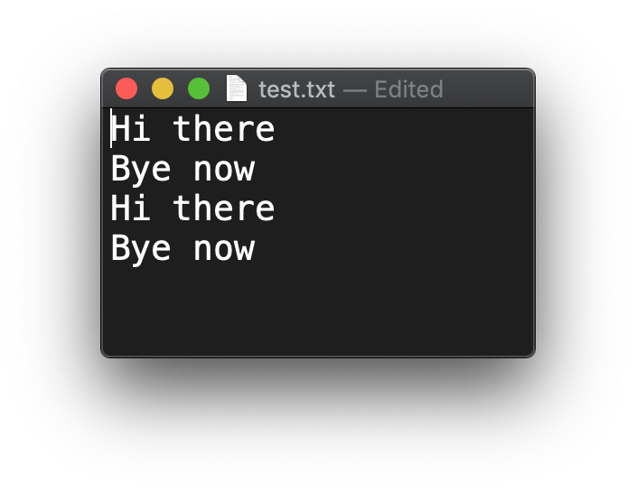

File IO
Almost all applications work on external data – files, databases and internet resources.
Here we will only have a look at files.
Path & Paths
These classes represent storage locations, not the files themselves. They are useful for quite a number of things. Here are a few.
String fileName = "/Users/michiel/IdeaProjects/JavaIntroProgrammingAssignments/data/proteins.fa";
Path path = Paths.get(fileName);
System.out.println("path = " + path);
System.out.println("path.getParent() = " + path.getParent());
System.out.println("path.getRoot() = " + path.getRoot());
System.out.println("path.subpath(0,3) = " + path.subpath(0, 3));
System.out.println("path.getFileName() = " + path.getFileName());
//convert to File object
File file = path.toFile();
will output
path = /Users/michiel/IdeaProjects/JavaIntroProgrammingAssignments/data/proteins.fa
path.getParent() = /Users/michiel/IdeaProjects/JavaIntroProgrammingAssignments/data
path.getRoot() = /
path.subpath(0,3) = Users/michiel/IdeaProjects
path.getFileName() = proteins.fa
File and Files
Class Files has typical utility methods:
String fileName = "/Users/michiel/IdeaProjects/JavaIntroProgrammingAssignments/data/proteins.fa";
Path path = Paths.get(fileName);
System.out.println("Files.isReadable(path) = " + Files.isReadable(path));
System.out.println("Files.isDirectory(path) = " + Files.isDirectory(path));
try {
Path copy = Paths.get("/Users/michiel/Desktop/test.fa");
//delete if it already exists
Files.deleteIfExists(copy);
Files.copy(path, copy);
} catch (IOException e) {
e.printStackTrace();
}
outputs this, and copies the file to my Desktop.
Files.isReadable(path) = true
Files.isDirectory(path) = false
Files.copy() = /Users/michiel/Desktop/test.fa
Class File represents the actual file on the storage system. Here is a standard workflow with reading and writing.
Create
Create a file.
if(! Files.exists(dataPath)) {
try {
Files.createFile(dataPath);
} catch (IOException e) {
e.printStackTrace();
}
}
Write
Write to file. Note the try-with-resources construct that was introduced in Java7.
try (BufferedWriter writer = Files.newBufferedWriter(dataPath, StandardOpenOption.APPEND)) {
writer.write("Hi there");
writer.newLine();
writer.write("Bye now");
writer.newLine();
} catch (IOException e) {
e.printStackTrace();
}
Note the StandardOpenOption argument. Besides APPEND you have these choices:
APPENDIf the file is opened for WRITE access then bytes will be written to the end of the file rather than the beginning.CREATECreate a new file if it does not exist.CREATE_NEWCreate a new file, failing if the file already exists.READOpen for read access.WRITEOpen for write access.
Running this code twice will generate this file contents:

For convenience, you can wrap the BufferedWriter into a PrintWriter instance. This gives you easier line writing and the possibility for string formatting:
try (PrintWriter writer = new PrintWriter(Files.newBufferedWriter(dataPath, StandardOpenOption.APPEND))) {
writer.println("I'm back!");
writer.format("%s is mijn voornaam en %s mijn achternaam", "Michiel", "Noback");
//Also nice: class MessageFormat
writer.println(MessageFormat.format("{0} is mijn voornaam en {1} mijn achternaam", "Jan", "Jansen"));
} catch (IOException e) {
e.printStackTrace();
}
Read
Reading data from file is a similar process:
try(BufferedReader reader = Files.newBufferedReader(dataPath)) {
String line;
while ((line = reader.readLine()) != null) {
System.out.println("line = " + line);
}
} catch (IOException e) {
e.printStackTrace();
}
Parsing file content the easy way
A thing that typically happens when reading data is to split the line into elements on some separator:
//splits on spaces
String[] elements = line.split(" ")
In this example, this is the employee data we are going to process.
Name Age Function Salary*1000 JohnDoe 27 Programmer 23.67 JaneSmith 31 Manager 42.00 JoanDonnely 38 CEO 89.87 RoseBanner 18 secretary 11.78
File empl_data.csv is a tab-separated file. Note the first line is a header and not real data.
Here is a typical use case for working with structured data. First, class Employee:
package snippets.apis;
public class Employee {
private String name;
private int age;
private double salary;
public Employee(String name, int age, double salary) {
this.name = name;
this.age = age;
this.salary = salary;
}
@Override
public String toString() {
return "Employee{" +
"name='" + name + '\'' +
", age=" + age +
", salary=" + salary +
'}';
}
}
Next, parse Employee instances:
private static List<Employee> parseEmployees() {
String fileName = "/Users/michiel/IdeaProjects/JavaIntroProgrammingAssignments/data/empl_data.csv";
Path path = Paths.get(fileName);
List<Employee> employees = new ArrayList<>();
try (BufferedReader br = Files.newBufferedReader(path)) {
String line;
int lineNumber = 0;
while ((line = br.readLine()) != null) {
lineNumber++;
//skips first header line
if (lineNumber == 1) continue;
//split on tabs
String[] elements = line.split("\t");
String name = elements[0];
//convert to int
int age = Integer.parseInt(elements[1]);
String function = elements[2];
//convert to double
double salary = Double.parseDouble(elements[3]) * 1000;
Employee emp = new Employee(name, age, salary);
employees.add(emp);
System.out.println(emp);
}
} catch (IOException e) {
e.printStackTrace();
}
return employees;
}
As stated before: this is very typical for the start of any data processing pipeline.
More advanced splitting is discussed in a next topic: regular expressions.
Note on character sets
All these examples worked with the default characterset of Java, UTF-8. When other sets are required, these can be specified in the Files.newBufferedReader() and Files.newBufferedWriter() factory methods. See docs for details.